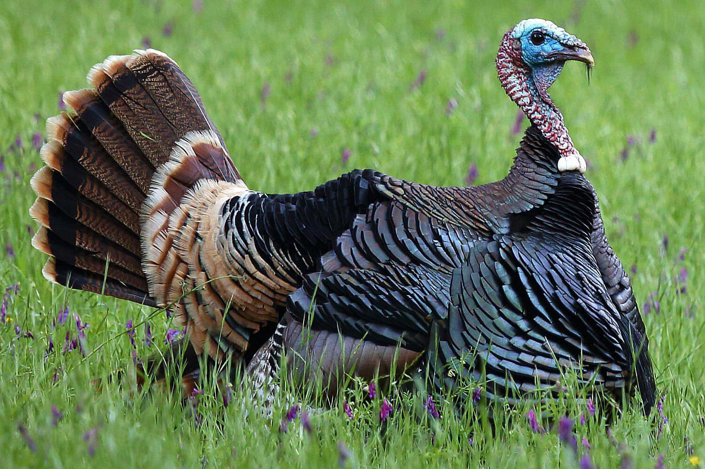

Michal Kosinski is an Associate Professor in Organizational Behavior at Stanford’s Graduate School of Business and studies job-person fit and humans using cutting-edge computational methods.Read more
Michal Kosinski is an Associate Professor in Organizational Behavior at Stanford’s Graduate School of Business and studies job-person fit and humans using cutting-edge computational methods.Manager
